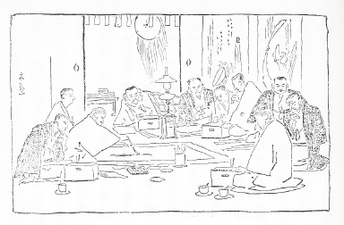

病の
牀に仰向に寐てつまらなさに天井を
睨んで居ると天井板の木目が人の顔に見える。それは一つある節穴が人の眼のように見えてそのぐるりの木目が不思議に顔の輪廓を形づくって居る。その顔が始終目について気になっていけないので、今度は右向きに横に寐ると、襖にある雲形の模様が
天狗の顔に見える。いかにもうるさいと思うてその顔を心で打ち消して見ると、襖の下の隅にある水か何かのしみがまた横顔の輪廓を成して居る。仕方がないから試に左向きに寐て見るとガラスごしに上野の杉の森が見えてその森の
隙間に向うの空が透いて見える。その隙間の空が人の顔になって居る。丁度画探しの画のようで横顔がやや逆さになって見えるのは少し風変りの顔だ。再び仰向になって、今度は顔のない方の天井の隅を睨んで居ると、馬鹿に大きな顔が
忽然と現れて来る。
かように暗裏の鬼神を画き空中の楼閣を造るは平常の事であるが、ランプの火影に顔が現れたのは
今宵が始めてである。

『ホトトギス』所載の挿画
年の暮の事で今年も例のように忙しいので、まだ十三、四日の
日子を余して居るにもかかわらず、新聞へ投書になった新年の俳句を病牀で整理して居る。読む、点をつける、それぞれの題の下に分けて書く、草稿へ棒を引いて向うへ投げやる。それから次の草稿へ移る。また読む、点をつける、
水祝という題の処へ四、五句書き抜く、草稿へ棒を引いて向うへ投げやる。同じ事を繰り返して居る。夜は
纔に
更けそめてもう周囲は静まってある。いくらか熱が出て居るようでもあるが毎夜の事だからそれにも構わず仕事にかかって居る。けれども熱のある間は呼吸が迫るので仕事はちっともはかどらぬ。それのみでない蒲団の上に横になって、右の
肱をついて、左の手に原稿紙を持って、書く時には原稿紙の方を動かして右の手の筆の
尖へ持って往てやるという次第だから、ただでも一時間か二時間かやると肩が痛くなる。徹夜などした時は、仕事がすんでから右の手を伸ばそうとしても容易に伸ばす事が出来んようになってしまう。今日も昼からつづけさまに書いて居るので大分くたびれたから、筆を投げやって、右の
肱を蒲団の外へ突いて、
頬杖をして、暫く休んだ。熱と
草臥とで少しぼんやりとなって、見るともなく目を張って見て居ると、ガラス障子の向うに、我枕元にあるランプの火の影が写って居る。もっともガラスとランプの距離は一間余りあるので火の影は揺れてやや大きく見える。それをただ見つめて居ると涙が出て来る。すると灯が二つに見える。けれどもガラスの
疵の加減であるか、その二つの灯が離れて居ないで不規則に接続して見える。全くの無心でこの大きな火の影を見て居るとその火の中に
俄に人の顔が現れた。
見ると西洋の画に善くある、眼の丸い、くるくるした子供の顔であった。それが忽ち変って高帽の紳士となった。もっとも帽の上部は見えて居らぬ。首から下も見えぬけれど何だか
二重廻しを著て居るように思われた。その顔が三たび変った。今度は八つか九つ位の女の子の顔で眼は全く下向いて居る。
額際の髪にはゴムの長い
櫛をはめて髪を押さえて居る。四たび変って鬼の顔が出た。この顔は先日京都から送ってもろうた牛祭の鬼の面に似て居る。かようにして順々に変って行く時間が非常に早くかつその顔は思わぬ顔が出て来るので、今度は興に乗ってどこまで変化するかためして見んと思いはじめた。まるで見せ物でも見るような気になったのだ。そう思うとそれから変りようがやや遅くなった。
その次には猿の顔が出た。それが西洋の昔の学者か豪傑かの顔と変った。その顔は少し横向きで柔かな髪は肩まで垂れて居る。極めて優しい顔であるがただ見たように思うだけで誰の肖像か分らぬ。それから暫くは火が輝いで居るばかりで何の形も現れて来ぬ。なお見つめて居ると火の真中に極めて明るい一点が見えて来た。それが次第に大きくなって往く。終に一つの大目玉が成り立った。それが崩れるとまた暫く何も出来ずに居たが、ようよう
丸髷の女が現れた。その女の
鬢が両方へ張って居るのは四方へ放って居る光線がそう見えるのである。その光線の鬢は白くまばらなので
石膏細工の女かと思われた。この女は初め下向いて眼を
塞いで居たが、その眼を少しずつ明けながらその顔を少しずつあげると、段々すさまじい人相になって、遂に髪の逆立った
三宝荒神と変ってしもうた。荒神様が消えると
耶蘇が出て来た。これは十字架上の耶蘇だと見えて首をうなだれて眼をつぶって居るが、それにもかかわらず頭の周囲には丸い御光が輝いて居る。耶蘇が首をあげて眼を開くと、
面頬を
著けた武者の顔と変った。その武者の顔をよくよく見て居る内に、それは面頬でなくて、口に呼吸器を掛けて居る肺病患者と見え出した。その次はすっかり変って
般若の面が小く見えた。それが消えると、
癩病の、頬のふくれた、眼を
剥いだような、気味の悪い顔が出た。試にその顔の
恰好をいうと、文学者のギボンの顔を
飴細工でこしらえてその顔の内側から息を入れてふくらました、というような具合だ。忽ち火が三つになった。
何か出るであろうと待って居るとまた前の耶蘇が出た。これではいかぬと思うて、
少く頭を後へ引くと、視線が変ったと共にガラスの
疵の具合も変ったので、火の影は細長い
鍵のような者になった。今度はきっと風変りの顔が見えるだろうと見て居たけれど火の形が変なためか一向何も現れぬ。やや暫くすると何やら少し出て来た。段々明らかになって来ると
仰向に寐た人の横顔らしい。いよいよそうときまった。眼は静かに塞いで居る。顔は何となく沈んで居て
些の活気もない。たしかにこれは死人の顔であろう。見せ物はこれでおやめにした。
〔『ホトトギス』第三巻第四号 明治33・１・10〕